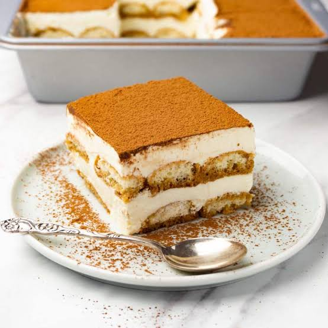
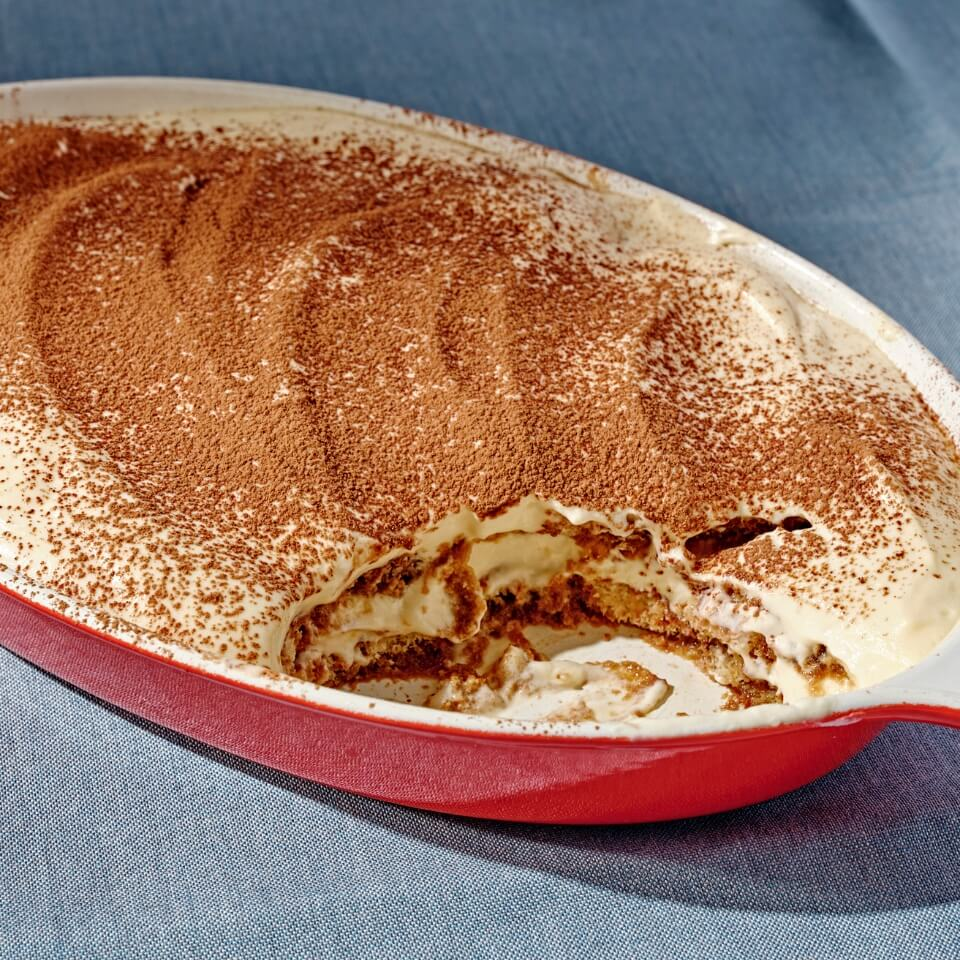

Tiramisù recipe
These are all the ingredients necessary to prepare Tiramisù at home:
- 500g Mascarpone
- 100-110g Caster Sugar
- 4 Eggs
- About 300ml Espresso Coffee or other very strong coffee
- Ladyfingers (Savoiardi) 300g
- Few spoons of Cocoa for dusting
These are the steps that will be followed in order to make a simple tiramisù at home.

- Prepare the coffee. You can either make it with a Moka pot (macchinetta del caffè) or you can use regular
Nescafè, but in this case it needs to be quite strong – the bitter the better. As said before, the coffee
will balance out the sweetness of the ladyfingers and the Mascarpone cream once finished. So don’t add any
sugar to it, otherwise the Tiramisu will get too sweet!
Let the coffee chill down before dipping the ladyfingers. You don’t want to ruin the mascarpone cream with
hot espresso-dipped ladyfingers.
- Separate eggs’ white and yolks in two different bowls. Using an electric mixer whisk together egg yolks and
sugar until well blended, after about 4-5 minutes the mixture will get pretty creamy and it will double in
size. Add Mascarpone and gently continue to whip until well combined. Doing this step gently is really the
key for a fluffy mascarpone cream, because it can happen that the mascarpone looses its creamy consistence
if whisked too strongly. So don’t rush it. Start gently with an electric mixer whisk and continue with a
spoon or a spatula.
- In another bowl whip the egg whites with a pinch of salt until stiff peaks form (until they will look like
whipped cream).
Add the whipped egg whites into the mascarpone mix stirring gently from bottom to top. After folding all
the egg whites in, you will get to the final mascarpone cream mixture.

- Layer the Tiramisu. Spread few spoons of the mascarpone cream on the bottom of a baking dish. Dip each half
of the ladyfingers in the coffee for not more than 1 second. Ladyfingers are very porous, therefore they
soak up lots of liquid pretty quickly and they break easily if left inside the coffee for too long. So, dip
the ladyfingers into the coffee quickly and place them onto the mascarpone layer. Spread them all over the
mascarpone cream until you get to an even layer. You can break the ladyfingers in half if you need to fill
in empty spaces. Spread half Mascarpone cream onto the ladyfingers’ layer and continue until you finish all
the ingredients. The tiramisu top layer should always be the mascarpone cream layer.
- Dust Tiramisu’s top layer with unsweetened cocoa powder and let it rest in the fridge for at least 5h – the
longer the better (but not too long). You can dust the Tiramisu with cocoa also right before serving it.
Home